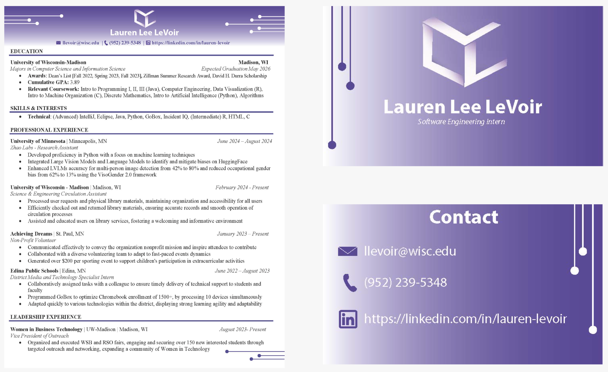

Personal Logo and Brand
For this project, I created a personal brand centered on my initials (three L’s) embodied in a cube logo. Each face represents a core aspect of my identity: Leadership (VP of Outreach for Women in Business – Tech), Technical expertise (research in computer vision and data science), and Ethical values that guide my work. The deep purple color reflects creativity and ambition, while the clean typography keeps the tone professional and approachable. This project reflects the personal brand I aim to carry into my full-time role at a medical technology company: leading teams, innovating responsibly, and making ethically informed decisions.